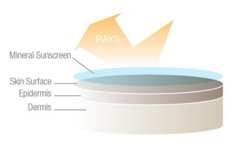
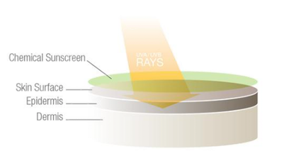

The first thing to understand about how a zinc prevents skin from becoming burnt from the sun, is to understand what actually happens. Everyone knows that sunburn is caused by being in the sun for too long. It is told endlessly to us as children. What is actually doing the burning though? The sun along with visible light rays that allows us to see during the day, also produces ultra violet light rays. Ultra Violet rays can be broken down further into UVA (shortwaves) and UVB (long-wave) The wavelength of these light rays are smaller than visible light and pass through clouds, hence why we can still get burnt on cloudy days. When the UV rays come into contact with our skin the energy they carry can burn the epidermis and the dermis layers. If the damage that is created results in a cellular mutation, skin cancer can be caused.
The best way to prevent the likelihood of skin cancer is to prevent the sun from making contact with the skin. Staying in the shade and clothing do not work in all situations, hence the need for sunscreen or sunblock. Sunscreen, when applied to the skin provides a protective layer on the surface. There are however two main different types of sunscreen. Mineral, which is the more natural process Cover Zinc uses, and Chemical. There are many differences between the two.
| Property | Mineral Sunscreen | Chemical Sunscreen |
|---|---|---|
| How do they work? | Physical sunscreens protect your skin from the sun by deflecting or blocking the sun's rays.  |
Chemical sunscreens work by absorbing the sun's rays. Some chemical filters can scatter sun rays, but still mostly just absorb them.  |
| Active Filters |
|
|
| Protection | Titanium dioxide protects against UVB rays, but not the full spectrum of UVA rays. Zinc oxide protects against the entire spectrum of UVB and UVA rays. Starts protecting immediately upon application. |
Range of protection for chemical filter will depend on the particular active and its stability. No single chemical filter, protects against the full spectrum UVA rays with a combination of multiple ingredients making up the sunscreen. Must wait 20 minutes after application for effective sun protection. |
| Safety | Pretty safe, FDA approved. Doesn't cause free radicals. Titanium dioxide can be problematic for some people. Zinc oxide is generally safe. It can be used on delicate skin and is a main ingredient in diaper rash cream. |
Generally safe, however some chemical filters generate free radicals which can cause skin damage, irritation, and aging. Many chemical UV filters have not been FDA approved in the States, but are in sunscreens sold in Europe and Asia. |